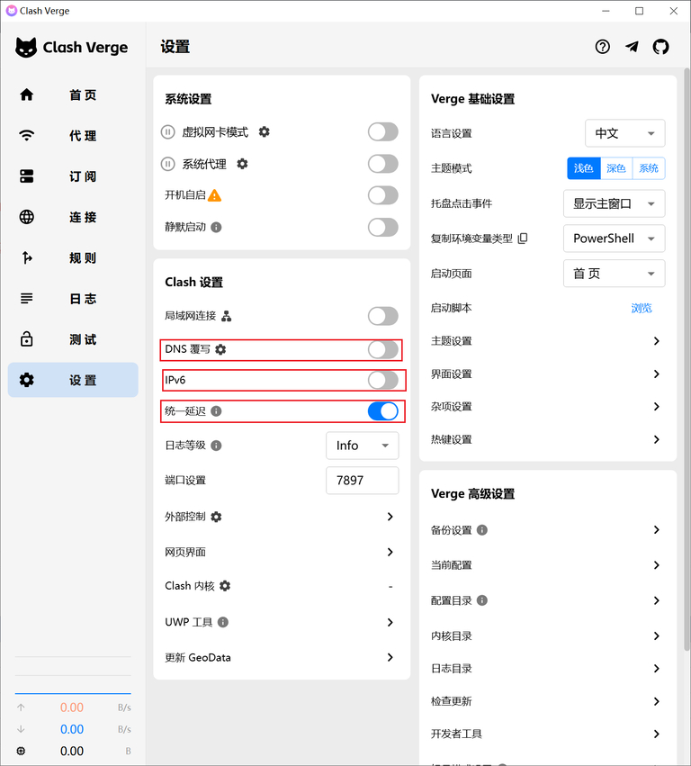
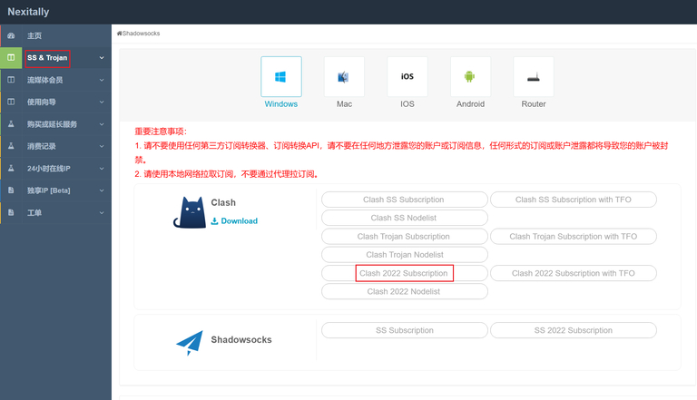
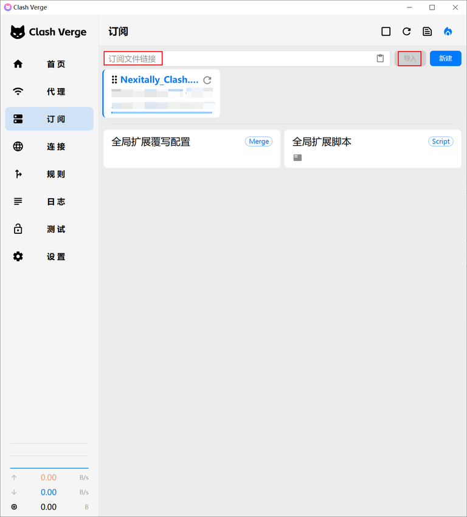
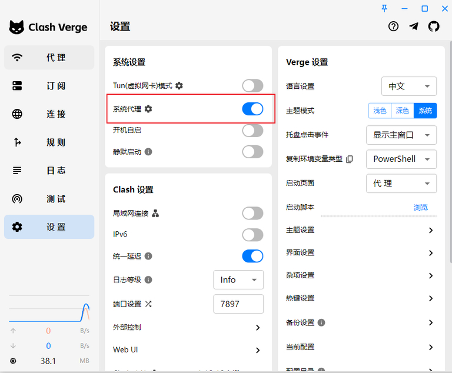

Windows 最主流的 Clash 客户端，支持规则分流、多种协议，附真实操作截图
点击下方按钮下载最新版 Clash Verge Rev（Windows x64）：
⬇️ 下载 Clash Verge Rev（GitHub）下载 .exe 安装包后，双击运行，一路点「下一步」完成安装。安装完成后桌面会出现 Clash Verge Rev 图标，双击打开。
请严格按照以下步骤设置，否则可能导致网络中断、不稳定、流媒体解锁失效等问题。
点击左侧菜单「设置」，按下图操作：


第一步：登录你购买的机场后台，找到「订阅」或「使用文档」页面，选择 Clash 格式，复制订阅链接。
第二步：在 Clash Verge Rev 中，点击左侧「订阅」，将复制的订阅链接粘贴到顶部输入框，点击「订阅文件链接」，再点击「导入」。

第三步：导入成功后，下方会出现配置文件。鼠标右键点击刚导入的配置文件，在下拉菜单中点击「使用」，使其变为已激活状态（蓝色高亮）。
点击左侧「设置」，找到「系统代理」开关，点击开启（按钮变蓝）。此时系统会接管所有浏览器网络请求，走代理访问。

点击左侧「代理」，进入节点控制页面，选择你想使用的节点。建议选择延迟低（绿色）的节点。
Q：打开后节点全是红色 / 超时？
A：点击节点右侧「测速」按钮，等待测速完成。若全部超时，检查订阅是否正确导入，或尝试重新更新订阅。
Q：开启系统代理后国内网站变慢？
A：确认使用的是「规则模式」而非「全局模式」。规则模式会自动判断国内/国外流量。
Q：程序提示缺少 .NET 运行时？
A：前往 Microsoft 官网 下载安装最新版 .NET Desktop Runtime。